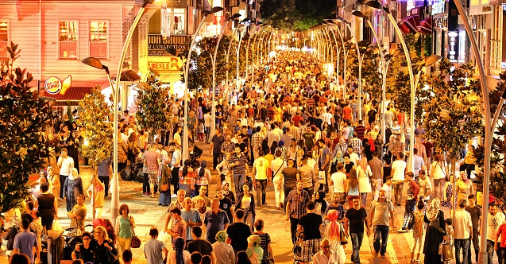
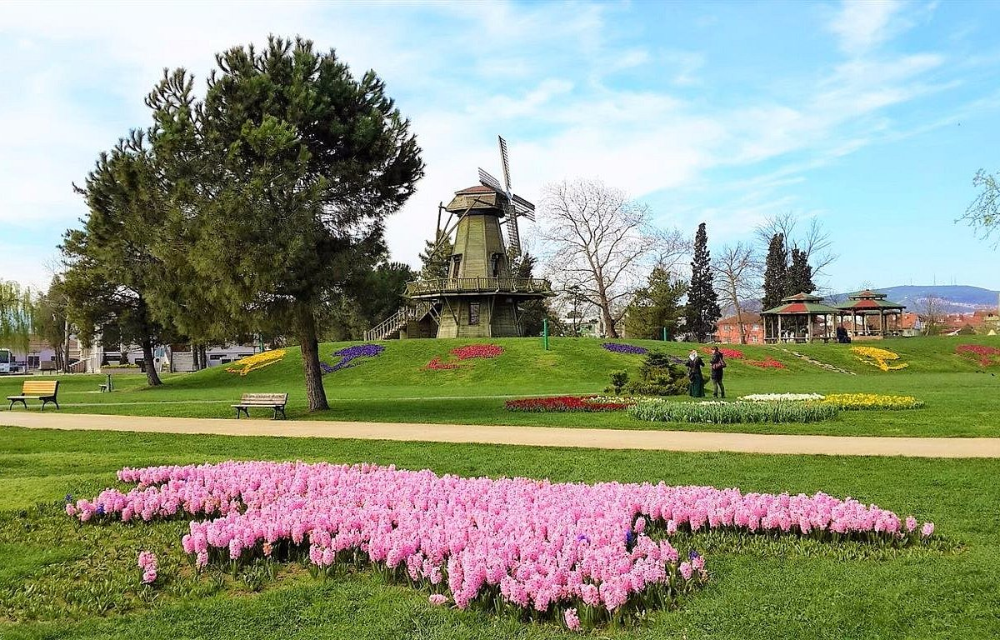
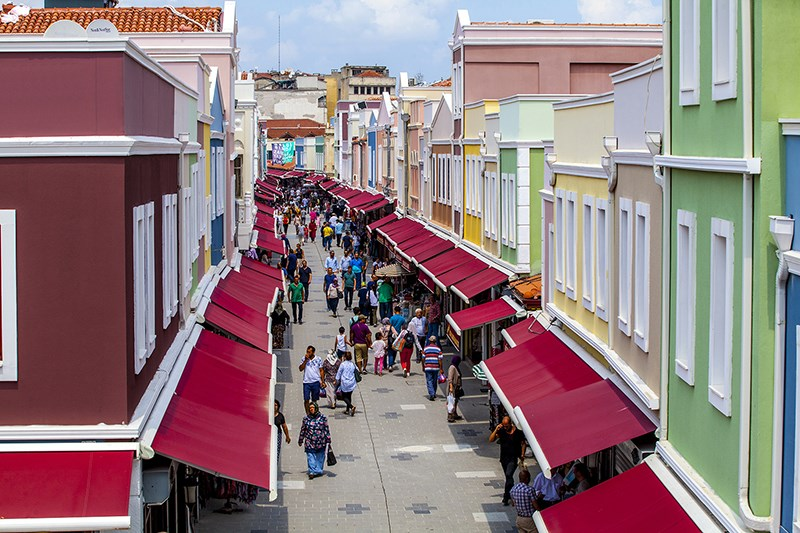
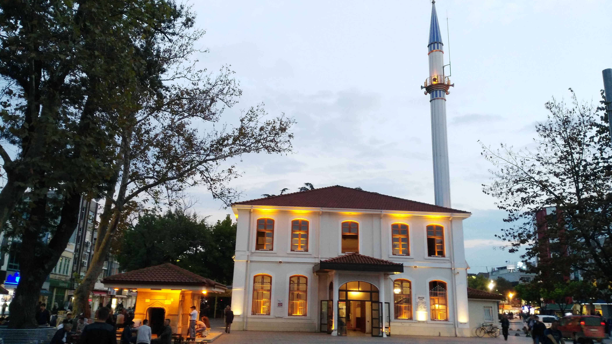
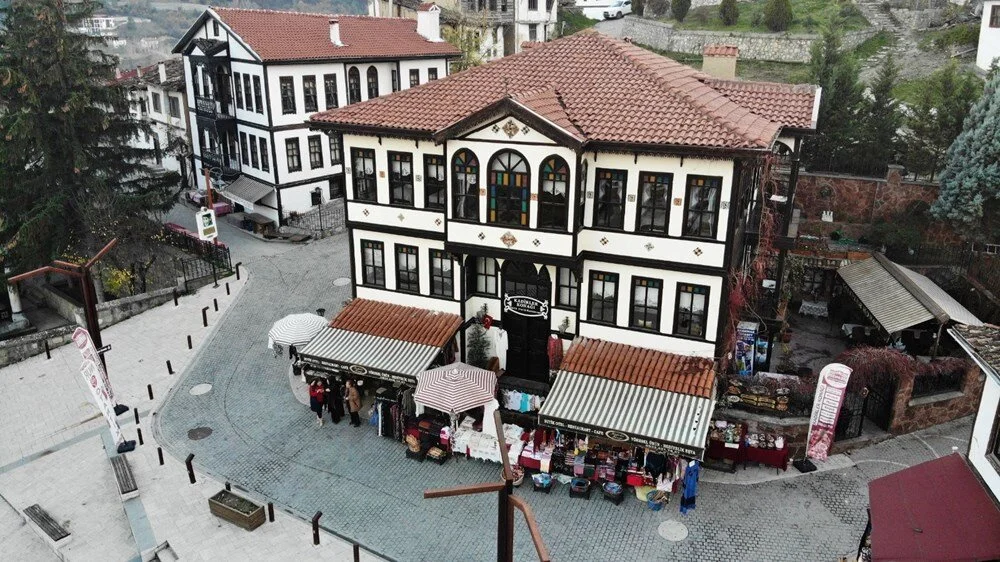

SAKARYA

Çark Caddesi
Çark Caddesi her iki tarafında dükkanlar, cafeler, pastahaneler, bankalar bulunan araç trafiğine kapalı, Sakarya'nın en yoğun ve en gözde caddesidir.
Kent Park
İçinde yapay göl, kafe, spor tesisleri, çocuk parkı ve yürüyüş yolları bulunan, Adapazarı'nda yapılmış ilk büyük park.
Uzun Çarşı
Adapazarı'nın Osmanlı döneminden kalan en eski ve en köklü çarşılarının başında gelir.
Orhan Cami
Uzun Çarşı'nın hemen yanı başında bulunan Orhan Cami Adapazarı'nın Osmanlı döneminde feth edilmesinden sonra Konuralp Bey tarafından Orhan Gazi adına yapılmıştır.
Taraklı Evleri
En az Safranbolu evleri kadar ayakta kalabilmiştir. Tarihi evlerin bazılarının 3 asrın üzerindedir. Bu evlerin genel karakteristiği Osmanlı şehir dokusunu oluşturan üç katlı ev biçimidir.
Justinianos Köprüsü

Geç Roma Döneminden kalma, Sakarya nehri üzerinde bir taş köprüdür. Ancak günümüzde Sakarya Nehri zamanla yatak değiştirdiğinden artık buradan akmamaktadır. Köprü, 2018'de UNESCO tarafından Dünya Mirası Geçici Listesi'ne eklendi. Halk arasında Beşköprü olarak bilinir.